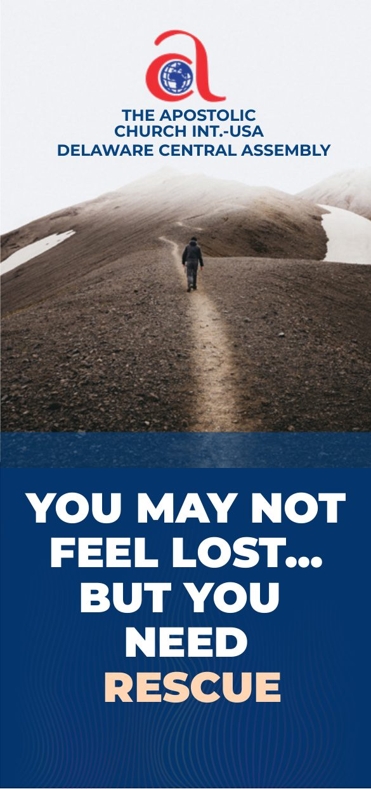
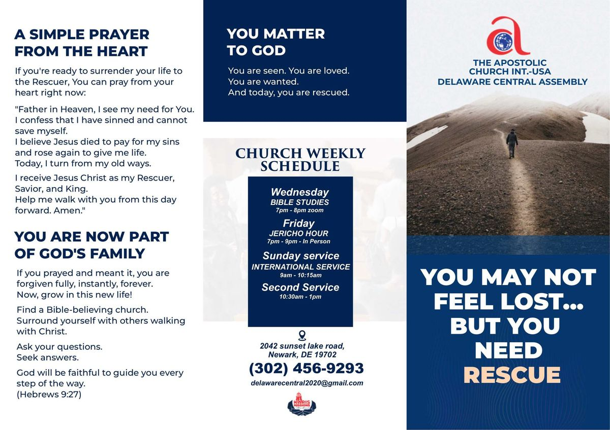
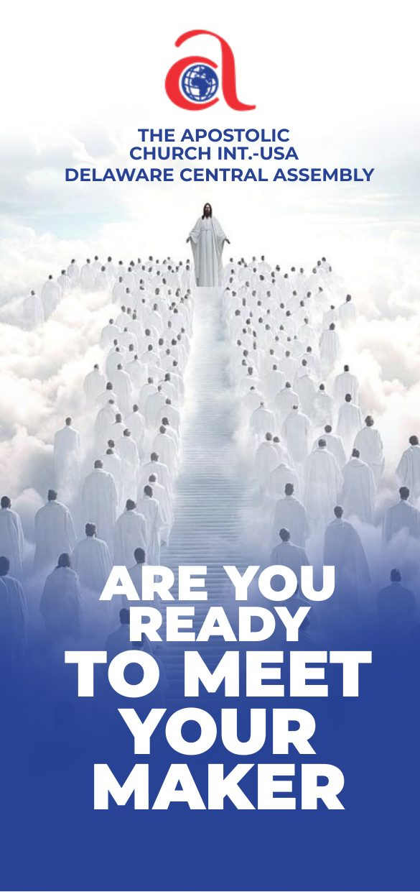
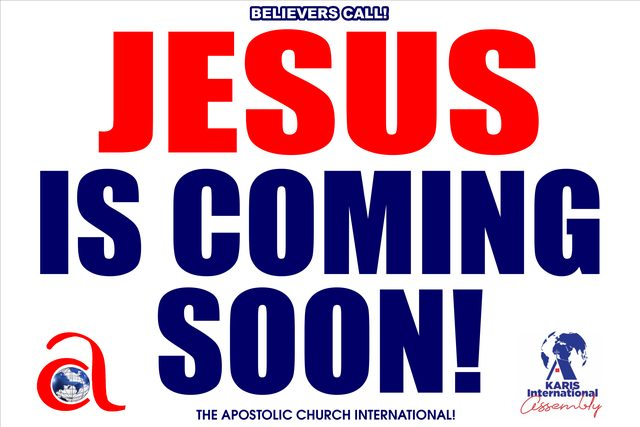
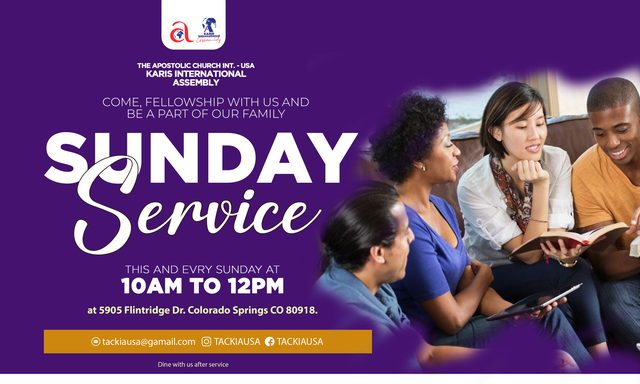

You May Not Feel Lost… But You Need Rescue
A three-panel tract for people who are comfortable but disconnected from God. Walks through spiritual death, the need for a rescuer, God's rescue plan, and a prayer of surrender.
Equipped to Share
The tracts and outreach artwork our own teams use, ready for you to print and hand out this week. No sign-up, no cost, no permission to ask for.
Everything here was written and designed for real outreach, on real streets, by people who were nervous the first time too.
Print one copy or five hundred. Hand them out at your church, leave them on doorsteps, put them in a waiting room, or give one to a friend you have been praying for. The Word documents let you swap our contact details for your own assembly's, so it comes from you and points people to you.
You do not need to ask us first. If you would like something we have not made yet, tell us and we will try.

Nothing matched that. Try another word, or ask us for it and we will see what we can do.
Print-ready evangelism tracts used in street outreach and door-to-door ministry. Download the PDF to print and share, or the Word version if you need to adapt the contact details for your own assembly.

A three-panel tract for people who are comfortable but disconnected from God. Walks through spiritual death, the need for a rescuer, God's rescue plan, and a prayer of surrender.

An apologetics-leaning tract addressing the reality of judgment, the evidence of a Creator, and the invitation of the cross. Suited to thoughtful sceptics and open-air conversations.
A fuller gospel presentation moving from creation and purpose, through the fall and God's mercy, to the invitation to come to the Saviour. Useful as a follow-up for new believers.
Print artwork used for street evangelism, neighbourhood visitation, and outdoor signage. Send these files straight to a print shop, or use them as templates for your own outreach.
Neighbourhood door hanger carrying Sunday service and midweek Bible study details. Print-ready artwork at full bleed.
Alternate colourway of the neighbourhood door hanger, for rotating outreach rounds or a second design run.

The Believers Call street-evangelism placard artwork, supplied as print-ready PDF for yard signs and hand-held boards.

Large-format banner artwork sized for a standard 3ft by 5ft outdoor print, for use at services, crusades, and community events.
Print and give away as much of this as you like, for any ministry purpose. Change the contact details to your own church if that helps. We only ask two things: do not change the Gospel content, and never sell it. Someone gave so that these could be free, and that is how they should stay.
Being written and reviewed now. They will appear here as each is finished, and there is nothing to sign up for.
How to begin a Gospel conversation without a script and without cornering anyone, with wording you can actually say out loud.
A first ninety days for someone who has just come to faith, designed to be walked through together rather than handed over.
Spiritual, practical, and logistical preparation for a team travelling to serve alongside a local church.